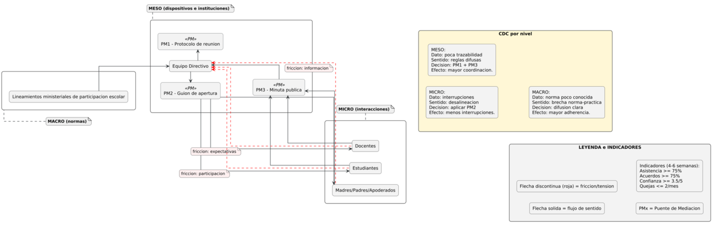

Guía metodológica:
“CRITERIOS INTERNOS DE
VALIDEZ”
EN BASE A LA TCCR
© 2025 by Jalin Simunovic Menares
is licensed under
DESCARGA EL ARCHIVO EN PDF AQUÍ:
https://zenodo.org/records/17262596
TABLA DE CONTENIDO
1) GENERALIDADES INTRODUCTORIAS
2) ¿QUÉ SON Y PARA QUÉ SIRVEN?
3) FOCO Y ALCANCE (QUÉ MIRAN, CUÁNDO Y QUIÉN LOS USA)
5) HIPÓTESIS DE CAMBIO Y DISEÑO INICIAL
6) ¿QUÉ SE ENTENDERÁ POR UN “CICLO” DESDE ESTE
PROCEDIMIENTO?
7) LOS TRES CRITERIOS DE VALIDEZ (DEFINICIÓN LLANA + CÓMO SE
VE + EJEMPLOS)
7.1. CRITERIO: “COHERENCIA INTER‑NIVELES”
7.2. CRITERIO: “EFICACIA VINCULAR”
7.3. CRITERIO: “JUSTICIA RELACIONAL”
8) PROCEDIMIENTO PASO A PASO (CON PREGUNTAS GUÍA)
10) TRES CASOS COMPLETOS DE EJEMPLO (APLICACIÓN PRÁCTICA)
10.1. CASO A — ESCUELA (CONVIVENCIA Y FAMILIA)
10.2. CASO B — BARRIO (ESPACIO PÚBLICO)
10.3. CASO C — ORGANIZACIÓN LABORAL (CLIMA Y CUIDADO DEL
EQUIPO)
En la TCCR, los “Criterios Internos
de Validez” son los estándares de calidad epistémica que se desprenden del
propio marco teórico (objeto, ontología y lógica analítica de la TCCR) y sirven para juzgar si una lectura/intervención profesional
es adecuada y valiosa dentro del paradigma cognosistémico,
sin depender de marcos importados.
OBJETIVO GENERAL DE LOS CRITERIOS
Asegurar que toda lectura, decisión e intervención realizada
desde la TCCR mantenga integridad teórico-práctica
—alineando el objeto formal con el Cognosistema micro–meso–macro—
y genere conocimiento endógeno acumulable, mediante trazabilidad (dato→sentido→decisión→efecto), evaluación
con la matriz y cierres de bucle documentados.
1.1. En términos
prácticos, los tres criterios planteados conllevan:
1.2. ¿Cómo se debieran
evaluar?
·
Mediante trazabilidad
interpretativa (del dato al sentido y a la decisión), evidencias de alineación
entre niveles, y efectos relacionales observables/replicables en contextos
semejantes.
Los Criterios Internos de Validez son los estándares
de calidad que, en base al enfoque teórico de la TCCR,
se propone para evaluar si un diagnóstico, una decisión o una intervención
están bien hechas dentro del marco de este paradigma. Sirven para:
En simple: estos criterios son el
control de calidad de la TCCR. Si una
lectura/intervención cumple con ellos, se puede afirmar entonces que es válida
dentro de la teoría. Con esto también se busca dar un paso más en el sentido de
elevar la credibilidad del Trabajo Social como ciencia social y humana,
planteando una metodología robusta, coherente y consistente de validación
epistemológica de sí misma.
Qué miran estos criterios:
la circulación de sentido cognosistémico y sus
efectos en las relaciones entre personas, dispositivos e instituciones.
Niveles que aborda: micro (interacciones), meso
(dispositivos e instituciones) y macro (tramas socioculturales y
normativas).
3.1. Cuándo usarlos:
Quién los puede usar:
profesionales, equipos y estudiantes de Trabajo Social que intervienen o
investigan desde la TCCR.
La formulación de la Hipótesis de Cambio traduce la
lectura cognosistémica temprana (delimitación, asunto
narrativo, evidencias y Mapa de Circulación de Sentido - MCS
- versión 1) en una apuesta verificable que alinee micro–meso–macro
mediante Puentes de Mediación (PM), Cadena de Decisión Cognosistémica (CDC) e indicadores equivalentes
(ICOR/VIRE).
5.0. Mini-glosario
operativo (lectura rápida)
Nota de remisión: Para definiciones
extendidas, ejemplos y plantillas de MCS, PM, CDC e
indicadores, ver el punto “7.1.4. Instrumentos cognosistémicos
para verificar la coherencia”. Esta síntesis permite formular la hipótesis
ahora; el detalle técnico puede consultarse al diseñar/ajustar el ciclo.
5.1. Ubicación y función
5.2. Insumos mínimos
previos
Sin estos insumos, la hipótesis corre riesgo de ser vaga
(semánticamente) o inviable (pragmáticamente) y de quedar sin medición
equivalente (evaluativamente).
5.3. Cómo formular la
hipótesis (algoritmo operativo en 6 pasos)
Paso 1 — Mecanismo narrativo‑relacional: Enunciar el porqué del problema como un mecanismo
(p. ej., desalineación norma–práctica; déficit de traducción meso; asimetrías
de voz/procedimiento).
Paso 2 — Palancas de traducción: Identificar PM concretos y el/los
nivel(es) donde actuarán (micro/meso/macro) y quién es responsable.
Paso 3 — Redacción en formato estándar: Usar la estructura sugerida:
Si [PM/dispositivo + actor
responsable + nivel + modo de uso] entonces [cambio esperado en
ICOR/VIRE y/o en Coherencia Inter‑niveles] porque [mecanismo de
cambio que conecta el PM con el problema], medido por
[indicadores equivalentes por nivel con umbrales], en [plazo
razonable de un ciclo].
Paso 4 — Chequeo 3E (encaje cognosistémico).
· Semántico: el nombre del problema y
de la hipótesis coinciden en los tres niveles.
· Pragmático: existen
reglas/recursos/roles que permiten implementar los PM.
· Evaluativo: los indicadores miden
el mismo constructo en cada nivel.
Paso 5 — CDC v1 por nivel: Documentar, en un renglón por nivel, la Cadena D→S→D→E
asociada a la hipótesis (qué dato sostiene el sentido; qué decisión se toma;
qué efecto se busca).
Paso 6 — Hipótesis nula: Enunciar el contrafáctico:
“La implementación de [PM] no producirá cambios significativos en
[indicadores/constructos] en el plazo definido.”
Nota: existe un ejemplo
completo de hipótesis en el criterio “Coherencia Inter‑niveles”; el cual
se puede utilizar como patrón de calibración terminológica y de grado de
especificidad.
5.4. Qué es una buena
hipótesis (criterios de calidad)
5.5. Plantillas de
redacción
Plantilla A — estándar
Si [PM/dispositivo] es
implementado de forma [modo/ritmo] por [responsable] en
[nivel], entonces [cambio esperado en ICOR/VIRE y/o Coherencia] porque
[mecanismo], medido por [lista de indicadores equivalentes por
nivel con umbrales] en [plazo].
Plantilla B — multinivel (con encaje explícito)
Si [PM‑micro] + [PM‑meso] se
implementan coordinadamente, entonces [encaje
semántico/pragmático/evaluativo] aumentará y [ICOR/VIRE] mejorará,
medido por [indicadores micro/meso/macro], en [plazo].
Hipótesis nula
La implementación de [PM] y [difusión/ajuste normativo] no
modificará [indicadores] en [plazo].
5.6. Del enunciado al
diseño inicial
Con la hipótesis redactada, concrete un diseño inicial
mínimo viable:
5.7. Lista de chequeo 3E
(antes de implementar)
5.8. Errores posibles y
cómo corregirlos
5.9. Ejemplo sintético
(referencia cruzada)
·
Caso Escuela (resumen): déficit de traducción macro→micro en reuniones;
PM1–PM3 (protocolo, guion de apertura, minuta pública) + difusión de norma; hipótesis:
si se implementan sistemática y estandarizadamente
esos PM, entonces aumentará la coherencia interniveles
y mejorarán ICOR/VIRE, medido en 4–6 semanas por asistencia, acuerdos,
interrupciones, confianza y quejas. (Véase desarrollo completo en el criterio Coherencia
Inter‑niveles, en el punto 7).
5.10. Evidencia mínima
para pasar a “Ciclo”
Con estos elementos, el primer ciclo puede iniciar:
se ejecuta, se registra D→S→D→E,
se evalúa con la Matriz de Validación usando la regla del “mínimo
fuerte”, y se ajusta/escala según resultados.
Para el procedimiento un “ciclo” será una unidad completa
de trabajo que va desde una hipótesis y un diseño inicial
hasta la medición de efectos y el ajuste de la intervención. No
es solo un período de tiempo: es un recorrido verificable con hitos y
productos mínimos.
6.1. Definición operativa
Un ciclo queda constituido cuando, para un
caso/programa, se cumplen los siguientes 8 hitos:
6.2. Criterios de calidad
de un ciclo
Regla práctica sugerida: meta ≥2 ciclos
consecutivos para afirmar estabilidad de coherencia/eficacia/justicia.
6.3. Duración y anidación
6.4. Señales de cierre de
ciclo
6.5. Ejemplo rápido
·
Escuela: “guion de apertura” + “minuta pública” (PM), indicadores
de asistencia/confianza/acuerdos; a 8 semanas se aplican matriz y
ajustes. Ciclo 1 cerrado → se ajusta el protocolo y arranca Ciclo 2 para consolidar
participación y justicia relacional.
Definición: es el acoplamiento
narrativo entre los tres niveles del Cognosistema
(micro–meso–macro). Una lectura/intervención es coherente cuando el mismo
problema y la misma hipótesis de cambio se mantienen reconocibles en
cada nivel, sin saltos hermenéuticos ni contradicciones. En definitiva,
permite asegurar que la misma definición del problema y la misma hipótesis
de cambio se mantengan reconocibles y operables en micro, meso y macro.
7.1.1. Objetivo del
criterio
·
Garantizar el
acoplamiento narrativo y operativo entre micro–meso–macro, prevenir saltos
hermenéuticos y diseñar/activar “Puentes de Mediación” que traduzcan acuerdos
locales en reglas/prácticas; alinear indicadores equivalentes por nivel y
sostener consistencia semántica, pragmática y evaluativa en al menos dos
ciclos.
7.1.2. ¿Qué garantiza
este criterio?
Coherencia Inter-niveles
es el mecanismo de control ecosistémico de la TCCR.
No exige que la realidad “sea coherente” (a menudo no lo es); exige más bien
que la intervención profesional:
Así, garantiza que se actúe dentro del paradigma TCCR (multinivel, narrativo-relacional) aunque el caso
parta desalineado.
7.1.3. Los tres componentes
del encaje cognosistémico (3E)
Los Tres Encajes o 3E, son subcriterios operativos de
validez del criterio de Coherencia Inter-niveles. Estos sirven como una
especie de chequeo de consistencia epistemológica y operativa inmediatamente
posterior a la definición del problema y de la hipótesis de cambio.
Su función es operacionalizar la coherencia inter-niveles de la TCCR.
Estos encajes se deben pensar como una prueba rápida
que se hace justo después de definir el problema y la hipótesis de
cambio. Primero se verifica que todas las partes están hablando de lo mismo
(mismo nombre del problema e hipótesis en micro–meso–macro). Luego se comprueba
que existen los medios para llevar eso a la práctica: reglas, recursos, roles y
Puentes de Mediación que traduzcan los acuerdos. Por último, se asegura que se medirá
lo mismo en cada nivel, con indicadores equivalentes. Si algo no calza, se
sabrá a priori dónde ajustar: palabras (semántico), dispositivos
(pragmático) o métricas (evaluativo).
7.1.4. Instrumentos cognosistémicos para verificar la coherencia
o Dato: registros verificables
que describen lo ocurrido. Ejemplos: micro (citas textuales,
observación), meso (actas, formularios, bitácoras), macro (normas,
lineamientos, estadísticas).
o Sentido: interpretación TCCR del dato (problema/hipótesis de cambio en
clave relacional y narrativa). Se redacta breve, con referencia al Mapa de
Circulación de Sentido y al nivel donde surge.
o Decisión: qué se hará distinto, dónde
se formaliza (p. ej., protocolo/agenda/rol) y qué “Puente de Mediación”
lo habilita. Incluye responsables y plazo.
o Efecto: cambios observables en vínculos
y resultados. Se prueban con indicadores del criterio correspondiente
(ICOR para eficacia, VIRE para justicia – ver criterios posteriores) u otros
definidos.
·
Reglas metodológicas de
uso de: (1) un renglón por micro/meso/macro;
(2) no saltar pasos ni invertir el orden; (3) versionar y fechar;
(4) cerrar el bucle: el efecto retroalimenta el sentido y la siguiente
decisión.
7.1.5. Ejemplo práctico
completo (Caso Escuela)
Descripción inicial: Comunidad educativa que, bajo los lineamientos
ministeriales de participación escolar (nivel macro), evidencia una
brecha norma–práctica: las reuniones se interrumpen, los acuerdos se diluyen y
la información circula de forma irregular. En el nivel meso, el Equipo
Directivo traduce la norma mediante tres Puentes de Mediación (PM):
PM1 = “Protocolo de reunión” (reglas y roles); PM2 = “Guion de apertura” (orden
de la palabra y lenguaje claro); y PM3 = “Minuta pública” (registro y
trazabilidad). La circulación de sentido desciende de macro→meso→micro (docentes,
estudiantes, madres/padres/apoderados) principalmente a través de PM2, mientras
que la retroalimentación y el cumplimiento de acuerdos ascienden micro→meso
vía PM3; pese a ello, persisten fricciones micro→meso por expectativas,
participación e información. La CDC por nivel sintetiza que: (i) en micro,
aplicar PM2 reduce interrupciones y ordena la participación; (ii) en meso, combinar PM1+PM3 mejora la coordinación
y la trazabilidad de acuerdos; (iii) en macro,
“difusión clara de la norma” aumenta la adherencia. Como metas de corto plazo
se fijan asistencia y acuerdos ≥75 %, confianza ≥3,5/5 y quejas
≤2/mes, con seguimiento público a través de PM3.
Hipótesis central
(explicativa–operacional): La desalineación
norma–práctica en la escuela—evidenciada por interrupciones en reuniones, baja
trazabilidad de acuerdos y fricciones por expectativas, participación e
información—se debe principalmente a una traducción deficitaria de la norma
macro hacia el nivel micro; por tanto, si el Equipo Directivo implementa de
forma sistemática y estandarizada los Puentes de Mediación (PM1: Protocolo
de reunión, PM2: Guion de apertura, PM3: Minuta pública)
junto con difusión clara de los lineamientos (macro), entonces aumentará la
coherencia inter-niveles y mejorará la eficacia vincular y la justicia
relacional (ICOR/VIRE), observándose en 4–6 semanas mejoras verificables
respecto de la línea base: asistencia ≥ 75%, acuerdos cumplidos ≥ 75%,
disminución ≥40% de interrupciones por reunión, confianza ≥3,5/5 y quejas
≤2/mes.
Hipótesis nula: La implementación de PM1–PM3 y la difusión de la norma no
produce cambios significativos en esos indicadores.
EJEMPLO GRÁFICO DE INSTRUMENTOS
“MAPA DE CIRCULACIÓN DE SENTIDO” (MCS)
CON “PUENTES DE MEDIACIÓN” (PM 1, 2 Y 3) + “CADENA DE DECISIÓN COGNOSISTÉMICA” (CDC) INTEGRADOS

7.1.6. Señales de buena
práctica
7.1.7. Señales de alerta
7.1.8. Indicadores
sugeridos
7.1.9. Procedimiento en 5
pasos
7.1.10. Cómo puntuar este
criterio (0–4)
7.1.11. Errores avanzados
y cómo corregir
Definición: capacidad de una
intervención para reconfigurar favorablemente la arquitectura de relaciones
que sostiene el problema/objetivo (confianza, coordinación, reconocimiento, resolución/gobernanza
de conflicto). El foco no es la satisfacción momentánea, sino cambios
sostenibles en los patrones de interacción y en las reglas que los
habilitan.
7.2.1. Objetivo del
criterio
·
Garantizar la producción
y el sostenimiento de mejoras verificables en la arquitectura de relaciones
—ICOR: integridad/confianza, coordinación, reconocimiento y resolución de
conflictos— mediante el diseño, implementación y auditoría de dispositivos narrativos
y arreglos institucionales; medir con línea base, seguimiento y evaluación
(antes–durante–después) y sistematizar lecciones transferibles.
7.2.2. ¿Qué garantiza
este criterio?
Eficacia Vincular es el mecanismo de control de cambio
relacional de la TCCR. No exige “resultados
espectaculares” inmediatos; exige que la intervención profesional produzca y
estabilice mejoras verificables en la arquitectura de relaciones
mediante dispositivos y reglas que perduren. Con esto se busca:
Si micro mejora y meso no,
la mejora es frágil. Clasifica la falla (p. ej., coordinación) y actúa
en meso con PM y métricas; alinea con macro si hay normas.
7.2.3. Dimensiones clave
(ICOR)[2]
7.2.4. Mecanismos cognosistémicos
7.2.5. Indicadores
sugeridos
(elegir 3–5 según caso)
7.2.6. Procedimiento en 5
pasos
7.2.7. Ejemplos rápidos
7.2.8. Secuencia mínima
7.2.9. Ubicación frente a
los otros criterios
7.2.10. Regla práctica
sugerida
7.2.11. Ejemplo breve
·
Equipo interprofesional
hospitalario con reingresos altos:
PM=rol de enlace + tablero de derivaciones + guion de interconsulta.
Indicadores: tiempos de respuesta, reingresos, valoración cruzada. Efecto: baja
el tiempo de respuesta y reingresos; mejora reconocimiento entre disciplinas.
7.2.12. Cómo puntuar
(0–4)
7.2.13. Errores avanzados
y cómo corregir
Definición: grado en que el Cognosistema redistribuye voz, poder y reconocimiento
de modo que las personas y colectivos puedan enunciar y que esa enunciación
incida efectivamente en diagnósticos y decisiones. La justicia relacional
no es solo «participar», sino participar con consecuencias y bajo procedimientos
justos.
7.3.1. Objetivo del
criterio
·
Redistribuir voz,
incidencia y reconocimiento bajo reglas claras (VIRE: Voz, Incidencia,
Reconocimiento, Equidad procedimental), dejando trazas de incidencia en
diagnósticos y decisiones; instalar reparaciones (traducciones, cupos,
rotaciones, comités) y auditar su cumplimiento para asegurar procedimientos
justos.
7.3.2.¿Qué garantiza este
criterio?
Justicia Relacional es el mecanismo de control ético‑procedimental
de la TCCR. No exige que todas las voces piensen
igual; exige que todas las voces relevantes puedan enunciar y que esa
enunciación tenga consecuencias bajo reglas claras. Con esto se busca:
Por ejemplo, si micro demanda y macro la
ignora: no es “fracaso”; es señal para mediar: crear espacios de voz,
documentar propuestas, vincularlas a decisiones y, si procede, elevar cambios
normativos vía PM.
7.3.3. Dimensiones (VIRE)[3]
7.3.4. Instrumentos cognosistémicos
7.3.5. Indicadores
sugeridos
(seleccionar 4–6)
7.3.6. Procedimiento en 5
pasos
7.3.7. Ejemplos ampliados
7.3.8. Secuencia mínima
7.3.9. Ubicación frente a
los otros criterios
7.3.10. Regla práctica
7.3.11. Ejemplo breve
·
Consejo escolar: antes
decidían dos líderes. Reparaciones: cupos reservados, rotación de vocerías,
resúmenes en lenguaje claro, comité de garantías. Efectos: 40% de agenda de
nuevos actores, aumento de percepción de justicia procedimental y acuerdos implementados.
7.3.12. Cómo puntuar
(0–4)
7.3.13. Errores avanzados
y cómo corregir
Regla de oro: todo se documenta con trazabilidad
(del dato bruto al sentido y a la decisión) y con efectos observables
(qué cambió en las relaciones).
Paso 1. Delimitación cognosistémica
(micro–meso–macro)
Producto: ficha de actores y reglas por nivel + MCS
v1 (Mapa de Circulación de Sentido inicial con fricciones y acoples).
Paso 2. Asunto narrativo a trabajar
Producto: síntesis comparada de relatos + enunciado único del
Problema Narrativo (1–2 líneas).
Paso 3. Evidencias
Producto: carpeta por nivel con fuentes citables + línea base de
indicadores equivalentes por nivel (coherencia, eficacia, justicia).
Paso 4. Hipótesis y diseño
Producto: plan breve (1–2 págs.) con hipótesis de cambio, Puentes de
Mediación (PM) definidos (documentales/humanos/tecnológicos/rituales),
dispositivos narrativos (p. ej., memes cognosistémicos),
Cadena D→S→D→E
v1 por nivel, metas, responsables, cronograma y riesgos.
Paso 5. Implementación
Producto: cuaderno de campo compartido con evidencias de uso real de
PM (actas, fotos, logs), MCS v2 actualizado y
auditoría de cumplimiento.
Paso 6. Evaluación por criterios
Producto: Matriz de Validación completa (ver sección siguiente “9.
Matriz de Validación”) con puntajes 0–4 aplicando mínimo fuerte,
justificaciones y anexos probatorios + recomendaciones de ajuste.
Paso 7. Ajuste
Producto: acta de ajuste con nueva hipótesis (si corresponde),
rediseño de PM, actualización de indicadores/metas, Cadena D→S→D→E v2 y plan del siguiente
ciclo (fechas/hitos).
Paso 8. Cierre y lecciones
Producto: nota de transferibilidad con condiciones de contexto,
materiales finales (PM, plantillas), y registro de estabilidad (si se
completaron ≥2 ciclos).
Propósito epistemológico:
La Matriz de Validación es el dispositivo que operacionaliza los
criterios internos de validez cognosistémico. Su
objetivo es estimar, con base en evidencias, la calidad TCCR
de una lectura/intervención psicosocial entendida como acoplamiento narrativo
entre niveles y modificación de la arquitectura vincular bajo procedimientos
justos. Lejos de un checklist mecánico, organiza la
evaluación en cuatro planos complementarios —trazabilidad interpretativa,
alineación micro–meso–macro, indicadores pertinentes y efectos
observables— que permiten ponderar, en conjunto, la consistencia
hermenéutica y la eficacia práctica.
9.1. MATRIZ
Estructura y lógica de decisión: Cada criterio (coherencia, eficacia, justicia)
se aprecia a la luz de esos cuatro planos y se puntúa de 0–4 siguiendo el
principio del “mínimo fuerte”: el
puntaje final lo determina el plano más débil, resguardando la integridad del
estándar.[4] En
análisis comparados o series puede usarse el promedio con penalización.
El resultado es un registro auditable, comparable y transferible que habilita
acumulación endógena de conocimiento y robustece la credibilidad disciplinar.
|
Criterio |
Evidencia
de trazabilidad (Dato→Sentido→Decisión→) |
Alineación
micro–meso–macro |
Indicadores
sugeridos |
Efectos observables |
|
Coherencia inter‑niveles |
Carpeta por nivel + mapa de circulación |
Puentes de mediación explícitos |
% acuerdos micro formalizados en meso; adecuación a norma
macro |
Menos contradicciones entre relatos; consistencia temporal |
|
Eficacia vincular |
Plan de dispositivos +
registros de uso |
Cambios coordinados en
reglas/prácticas |
confianza (1–5);
cumplimiento de tareas; tiempos de coordinación |
Aumento de cooperación;
reducción de conflictos recurrentes |
|
Justicia relacional |
Procedimientos de voz + devoluciones |
Inclusión y reglas claras de participación |
% decisiones con participación de actores antes ausentes |
Aumento de agencia; mayor percepción de justicia |
9.2. Escala de puntuación
(cómo usarla)
9.3. Reglas de decisión
9.4. Ejemplo rápido
Si en Coherencia inter‑niveles tienes:
trazabilidad=3, alineación=2, indicadores=3, efectos=2 → puntaje 2 (Parcial)
con la regla del “mínimo fuerte”.
NOTA PARA PROFESIONALES:
La “Matriz de Validación” funciona como un “panel de
control” para evaluar si la intervención tiene sentido según el paradigma de la
TCCR: a) coherencia ecosistémica (entre
micro–meso–macro); b) mejora de los vínculos (confianza, coordinación,
reconocimiento, manejo de conflictos); y c) reglas justas en su
implementación (voz e incidencia de quienes participan). Esta herramienta
permite ordenar la intervención, justificar decisiones ante los equipos
profesionales o las instituciones y, sobre todo, aprender de manera acumulativa.
¿Cómo se ocupa en el día a día esta matriz? simple: siempre se registra Dato → Sentido → Decisión → Efecto. Luego, en la matriz, se completan cuatro columnas por
criterio: trazabilidad, alineación entre niveles, indicadores seleccionados y
efectos observados. Se aplica una nota de 0 a 4 utilizando como criterio
sugerido el “mínimo fuerte” (la nota final es la más baja de esas cuatro); así
se identifica el punto débil a mejorar. Se recomienda usarla antes (para
diseñar), durante (para ajustar) y después (para evaluar y extraer lecciones).
Aplicación concreta, en palabras simples: por ejemplo, si se organizan reuniones con familias en una
escuela, se puede definir un guion de apertura y una minuta pública (decisión);
medir asistencia, acuerdos cumplidos y confianza (indicadores), y observar si
disminuyen las quejas (efecto). Si, en cambio, se trabaja en un barrio, se
puede instalar una mesa vecinal con reglas claras y verificar si más actores
proponen temas y si disminuyen los incidentes. La matriz no reemplaza la
evidencia; la contextualiza relacionalmente y muestra, con claridad, qué
funciona y qué debe ajustarse.
10.1.1. Delimitación cognosistémica
10.1.2. Problema
narrativo
·
Altas fricciones y quejas
en reuniones; acuerdos no se cumplen y la confianza es baja.
10.1.3. Evidencias de
base (línea inicial)
·
Asistencia 55%; acuerdos
cumplidos 40%; confianza media 2,3/5; 6 quejas formales/mes.
10.1.4. Mapa de
Circulación de Sentido (MCS)
·
Fricción micro ⇆ meso
por expectativas no alineadas; macro exige participación sin traducción
práctica.
10.1.5. Puentes de
Mediación (PM)
·
PM‑1 Protocolo de
reunión (agenda, tiempos, roles); PM‑2 Guion de apertura con meme cognosistémico “acuerdo claro, respeto claro”; PM‑3 Minuta
pública en tablón.
10.1.6. Cadena de
Decisión Cognosistémica CDC (por nivel)
10.1.7. Indicadores y
metas
·
Asistencia ≥75%; acuerdos
cumplidos ≥75%; confianza ≥3,5/5; quejas ≤2/mes.
10.1.8. Resultados (8
semanas)
·
Asistencia 78%; acuerdos
82%; confianza 3,8/5; quejas 2/mes (−66%).
10.1.9. Matriz de Validación
(puntajes y justificación)
|
Criterio |
Trazabilidad
(D→S→D→) |
Alineación
micro–meso–macro |
Indicadores |
Efectos |
Puntaje |
|
Coherencia |
Cadena completa por nivel + MCS/PM |
PM‑1/2/3 en uso; norma macro traducida |
% acuerdos formalizados, asistencia |
Menos contradicciones, consistencia temporal |
3 |
|
Eficacia |
Plan de dispositivos +
actas |
Cambios coordinados en
reglas y prácticas |
confianza, asistencia,
acuerdos |
↓Quejas, reuniones más breves |
3 |
|
Justicia |
Turnos de palabra, minuta pública |
Inclusión de apoderados antes pasivos |
% temas propuestos por familias (20%) |
Mayor percepción de trato justo |
2 |
10.1.10. Lecciones
·
El PM documental (minuta
pública) cierra el bucle micro→meso;
falta subir participación a ≥30% para robustecer justicia relacional.
10.2.1. Delimitación cognosistémica
10.2.2. Problema
narrativo
·
Plaza con incidentes
recurrentes y actores descoordinados; voces se concentran en pocos líderes.
10.2.3. Evidencias de
base (línea inicial)
·
12 incidentes/mes;
participación media 12 personas; 80% de la agenda definida por 2 líderes.
10.2.4. MCS
·
Fricción micro por
conflicto no mediado; vacío meso de reglas; macro con ordenanza poco operativa.
10.2.5. PM
·
PM‑1 Mesa vecinal
con guion y roles; PM‑2 Patrullajes co‑diseñados;
PM‑3 Actas públicas; PM‑4 Minuta a Concejo para ajustar
ordenanza.
10.2.6. Cadena de
Decisión Cognosistémica CDC (por nivel)
10.2.7. Indicadores y
metas
·
Incidentes ≤7/mes;
participación ≥25 personas sostenidas; diversidad de voces (≥40% agenda
propuesta por nuevos actores).
10.2.8. Resultados (3
meses)
·
Incidentes 7–8/mes
(−35%); participación 28 sostenida; 45% de agenda propuesta por actores nuevos;
actas con acuerdos cumplidos 76%.
10.2.9. Matriz de
validación (puntajes y justificación)
|
Criterio |
Trazabilidad
(D→S→D→) |
Alineación
micro–meso–macro |
Indicadores |
Efectos |
Puntaje |
|
Coherencia |
Cadena por nivel + MCS/PM |
Micro/meso alineados; macro en ajuste |
incidentes, participación, % agenda |
↓Incidentes, acuerdos
cumplidos |
3 |
|
Eficacia |
Plan + registros de
patrullajes |
Cambios en
reglas/prácticas de reunión |
cumplimiento, tiempos,
cooperación |
Mejora sostenida 3
meses |
3 |
|
Justicia |
Reglas de voz + traducciones |
Cupos y rotación de vocerías |
45% agenda de nuevos actores |
Mayor justicia procedimental |
3 |
10.2.10. Lecciones
·
Cuando macro está en
ajuste, documentar “cierres de bucle” micro ⇆ meso sostiene mejoras y legitima el cambio normativo.
10.3.1. Delimitación cognosistémica
10.3.2. Problema
narrativo
·
Sensación de maltrato,
conflictos no resueltos, rotación alta (28% anualizada).
10.3.3. Evidencias de
base (línea inicial)
·
Percepción de
reconocimiento 2,1/5; tiempo medio de resolución 21 días; 0 procedimientos de
voz formales.
10.3.4. MCS
·
Fricción micro por falta
de canales; meso sin reglas eficaces; macro con política no implementada.
10.3.5. PM
·
PM‑1 Canal seguro
de reporte; PM‑2 Comité paritario con reglas y plazos; PM‑3 Política
interna difundida en lenguaje claro.
10.3.6. Cadena de
Decisión Cognosistémica CDC (por nivel)
10.3.7. Indicadores y
metas
·
Reconocimiento ≥3,5/5;
resolución ≤10 días; ≥80% de casos con devolución; rotación ≤18% (a 12 meses).
10.3.8. Resultados (2
meses)
·
Reconocimiento 3,6/5;
resolución 9 días; 92% con devolución; rotación en descenso (aún sin año
completo).
10.3.9. Matriz de
validación (puntajes y justificación)
|
Criterio |
Trazabilidad
(D→S→D→) |
Alineación
micro–meso–macro |
Indicadores |
Efectos |
Puntaje |
|
Coherencia |
Cadena/MCS/PM documentados |
Cambios micro⇆meso; macro difundido |
tiempos, reconocimiento, devoluciones |
Menos contradicciones en relatos |
3 |
|
Eficacia |
Plan + bitácora de
casos |
Reglas aplicadas, roles
claros |
resolución,
cumplimiento, rotación (tendencia) |
Mejora temprana, 1
ciclo |
2 |
|
Justicia |
Canal seguro + comité paritario |
Reglas de voz y apelación |
92% devoluciones; percepción de justicia |
Mayor agencia de trabajadores |
3 |
9.3.10. Lecciones
·
Para robustecer eficacia
(de 2 a 3–4) se requiere estabilidad en ≥2 ciclos y evidencia de impacto
en rotación anual.
La “Teoría Cognosistémica de la
Construcción Relacional Psicosocial Humana” (TCCR) propone
una epistemología endógena para el Trabajo Social, con objeto formal propio —la
relacionalidad psicosocial narrativamente construida—
y una unidad de análisis —el Cognosistema
micro–meso–macro—. En ese marco, los Criterios Internos de Validez no
son un accesorio metodológico, sino el mecanismo de demarcación que permite
distinguir buenas lecturas e intervenciones de aquellas que, aun bien
intencionadas, carecen de sustento teórico-práctico dentro de la TCCR. Su función es doble: garantizan consistencia
hermenéutica (que lo que se dice tenga sentido en todos los niveles) y eficacia
práctica (que lo que se hace mejore de verdad la arquitectura de los vínculos y
lo haga con reglas justas).
La tríada Coherencia Inter‑niveles – Eficacia Vincular
– Justicia Relacional opera como sistema: ninguna dimensión sustituye a
las otras. Por eso la Matriz de Validación adopta el principio del “mínimo
fuerte”: el estándar global nunca puede ser mejor que su eslabón más débil
entre trazabilidad, alineación, indicadores y efectos. Los instrumentos cognosistémicos —Mapa de Circulación de Sentido (MCS), Puentes de Mediación (PM) y Cadena de
Decisión Cognosistémica (CDC) — hacen visible cómo se traduce el dato en
acción y cómo esa acción retorna en aprendizaje verificable. Así, el
conocimiento se vuelve auditable, comparable y transferible.
Las aplicaciones presentadas (escuela, barrio, organización
laboral) muestran que la guía no burocratiza la práctica: ordena el trabajo
cotidiano, acelera acuerdos, distribuye voz y reconocimiento, y produce
resultados que se pueden defender ante terceros. Cuando se documentan cierres
de bucle y se sostienen dos o más ciclos de mejora, la organización aprende y
el saber generado eleva la credibilidad disciplinar del Trabajo Social, sin necesidad
de pedir prestados marcos ajenos.
En suma, esta guía convierte la práctica en laboratorio de
teoría TCCR: cada caso bien trazado alimenta una base
de conocimiento endógeno, útil para formación, gestión y política pública. El
desafío es sostener la reflexividad (evitar la ritualización vacía), proteger
la trazabilidad y cultivar un lenguaje común que mantenga alineados a actores y
niveles. Con estos cuidados, la TCCR no solo
interpreta el mundo relacional: lo repara con criterios propios y estándares
abiertos a escrutinio.
[1] Aquí “sentido”
remite al significado cognosistémico que el profesional reconoce en la
dinámica relacional (narrativa), durante su proceso de evaluación psicosocial.
Es decir, es el significado que conecta un dato con una acción
posible, leído con las lentes de la TCCR: relacional (vínculos), narrativa
(cómo se cuenta) y situada (en qué nivel ocurre).
Importante, no es opinión ni moralina, y
tampoco es solo “qué significa”. Es qué significa para los vínculos y hacia
dónde moverlos.
Fórmula práctica
En [nivel], [dato] significa
que [mecanismo relacional]; por eso [hipótesis de cambio].
Mini‑guía paso a paso
1.
Dato:
algo observado y verificable.
2.
Mecanismo
relacional: ¿qué pasa entre personas/dispositivos que explica ese dato?
(confianza, coordinación, reconocimiento, conflicto).
3.
Hipótesis
de cambio: pequeño movimiento que mejoraría ese mecanismo.
4.
Nivel:
¿ocurre en micro, meso o macro? (a veces en más de uno).
Tres ejemplos breves
· Escuela (micro): Dato:
40% de apoderados no asiste. Sentido: la invitación se percibe como “control”
más que como cooperación; hipótesis: cambiar el guion de apertura y
acordar reglas claras.
· Salud (meso): Dato:
derivaciones se “pierden”. Sentido: coordinación débil por roles
confusos; hipótesis: protocolo simple de derivación + tablero de
seguimiento.
· Política local
(macro): Dato: ordenanza exige participación, pero nadie participa. Sentido:
reconocimiento insuficiente (lenguaje técnico, horarios imposibles); hipótesis:
traducción a lenguaje claro + horarios accesibles + devolución pública.
Cómo verificar que el sentido del
profesional interviniente está bien construido
· Relacional: se
nombra un mecanismo entre actores (no se etiqueta a personas).
· Accionable: se sugiere
una decisión concreta (no un deseo vago).
· Ubicado: se dice en
qué nivel opera (micro/meso/macro).
· Trazable: se indica qué
dato lo sustenta.
· Coherente: el
sentido será el mismo (o compatible) cuando se revise en otros niveles.
Errores que pueden aparecer
· Psicologizar: “las
familias no quieren” (juicio) →
Mejor: “el guion actual desalinea expectativas y erosiona la confianza”.
· Estructuralismo
vacío: “el sistema es injusto” →
Mejor: “la regla actual excluye voces porque exige trámites diurnos sin
alternativas”.
· Diagnóstico sin
dirección: “hay conflicto” →
Mejor: “no hay reglas para resolver desacuerdos; hipótesis:
comité paritario con plazos”.
[2] ICOR es una
mnemotecnia didáctica utilizada en esta guía para recordar las cuatro
dimensiones de la eficacia vincular: Integridad/Confianza, Coordinación,
recOnocimiento y Resolución de conflictos. No constituye una
sigla canónica externa a la TCCR.
[3] VIRE es una
mnemotecnia utilizada en esta guía para agrupar las cuatro dimensiones de la justicia
relacional: Voz, Incidencia, Reconocimiento y Equidad
procedimental. No constituye un término canónico externo a la TCCR.
[4] “Mínimo fuerte”:
Como aclaración, en esta guía el rótulo “mínimo fuerte” hace alusión a
la regla conjuntiva no-compensatoria utilizada en evaluación
multicriterio (lógica AND). Es decir: P = min{T, A, I, E}, donde T=trazabilidad, A=alineación,
I=indicadores y E=efectos. Por tanto, para validez interna,
se propone que cada una de esas cuatro condiciones son ineludiblemente
necesarias: es decir, la fuerza total es la del eslabón más débil. El
“mínimo fuerte” simplemente nombra y hace operativo ese principio dentro de la
matriz propuesta. No introduce una regla nueva; solo traduce
pedagógicamente un enfoque existente y lo aplica bajo el paradigma de la
TCCR.